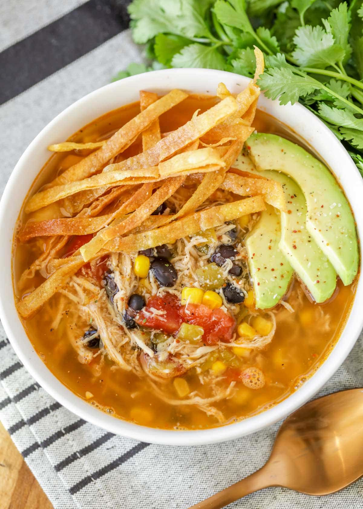

Chicken Tortilla Soup

Description
Chicken tortilla soup actually is an authentic Mexican dish.
The traditional soup is made with chicken broth, tomatoes, garlic, onion, chiles, and fried tortilla strips.
There are also variations of the soup, like ones that include beans.
Ingredients
Olive oil
Onion
Garlic
Tomatoes
Chicken Broth
Chili powder
Dried oregano
Black beans
Boneless chicken breast
Whole corn kernels
White hominy
Green chile peppers
Cilantro
Tortilla chips
Steps
-
Heat oil to meduim heat. Add onion and garlic.
Stir in crushed tomatoes, condensed broth, water,
chile powder, and oregano. Bring to a boil and
let it simmer.
-
Stir in black beans, chicken, corn, hominy, chile peppers
, and cilantro. Simmer for 10 minutes.
-
Serve soup into individual bowls. Top with crushed tortilla
chips.